锁相环的环路带宽和相位裕度
反馈系统
下图为典型的反馈系统
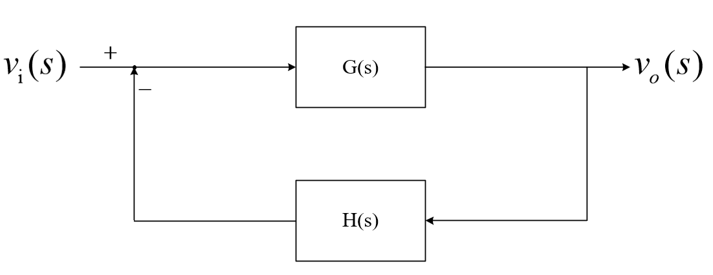
开环传递函数（环路增益/开环增益）为： \[ L(s)=G(s)H(s) \] 闭环传递函数（闭环增益）： \[ T(s)=\frac{G(s)}{1+G(s)H(s)} \]
在分析反馈系统时，一般默认：
- 开环传递函数 \(L(s)\) 的极点数大于零点数。
- 在高频段，开环增益随频率上升而降低。
- PLL系统一般是极点数大于零点数，因为 VCO 自带一个极点，环路滤波器的极点数一般大于或等于零点数。
- 若极点数小于等于零点数，高频处的稳定性非常差。
- 在低频时开环增益 \(|L(s)|\) 非常大，且反馈增益 \(H(s)\) 不会有奇怪的零极点（后面讨论的情况就直接假设反馈增益没有零极点，因为 PLL 反馈只有分频器，不引入零极点，即为常数）
- 在低频段，闭环传递函数趋近于常数\(\frac{1}{H(s)}\)，从而保证系统稳定性。
开环传递函数和闭环传递函数的幅频特性一般为：
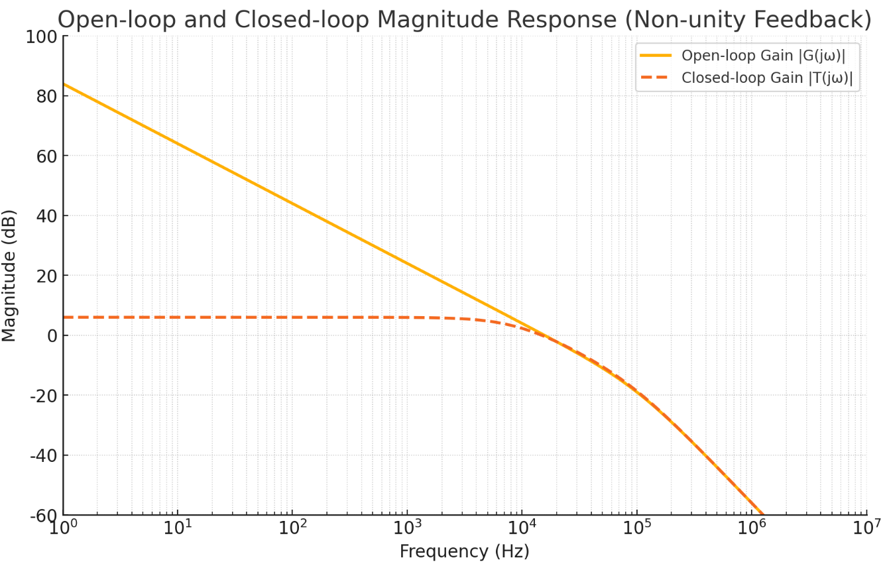
开环增益主要由\(G(s)\)决定，在低频时增益非常大，随频率增加逐渐降低。
在低频时，由于\(G(s)\)非常大，所以闭环增益几乎等于 \(\frac{1}{H(s)}\)。
这样，由于施加了负反馈，使得系统增益降低了，但特性的平坦部分被拓宽了，增益-频率特性得到了改善。
随着频率增高，\(G(s)\) 逐渐减小，当 \(|G(s)H(s)|=1\) 时，即开环增益为 0dB 时，闭环增益 \(T(s)=\frac{G(s)}{1+G(s)H(s)}\) 也开始明显降低。所以 \(|G(s)H(s)|=1\) 时对应的频率为环路带宽。
在小于环路带宽频率之前，闭环增益接近常数，开环增益相位影响不大；在大于环路带宽频率之后，\(G(s)\)很小，闭环增益 \(T(s)=\frac{1}{\frac{1}{G(s)}+H(s)}\) 的分母非常大，闭环增益很小，开环增益相位影响不大。
在接近环路带宽频率处，开环增益 \(G(s)H(s)\) 的相位特性对系统稳定性起关键作用。
比如假设开环增益处\(G(s)H(s)\)的相位为-180°，又因为\(|G(s)H(s)|=1\) ，那么\(|1+G(s)H(s)|=0\)，那么闭环增益就接近无限大，再该频率处系统就会出现震荡，不稳定。
若\(G(s)H(s)\)的相位为在-120°和-180°之间，那么\(|1+G(s)H(s)|<1\)，此时闭环增益就大于开环增益，在该频率处就会出现峰值现象。
将环路带宽处的开环增益相位和-180°的差值定义为相位裕度。
若相位裕度大于60°，在\(|G(s)H(s)|=1\)处也不会有峰值。
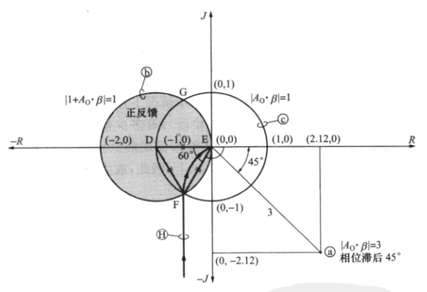
如图为复平面上的表示的 \(1+G(s)H(s)\) 和 \(G(s)H(s)\)，白色的圆为 \(|G(s)H(s)|=1\) 的轨迹，灰色的圆为\(|1+G(s)H(s)|=1\) 的轨迹。
可以看到在白色圆上，即 \(|G(s)H(s)|=1\) 时，若开环增益相位滞后小于120°，即相位裕度大于60°，\(|1+G(s)H(s)|>1\)，也就是开环增益大于闭环增益，不会出现峰值。
若相位裕度小于60°，\(|1+G(s)H(s)|<1\)，也就是开环增益小于闭环增益，就会出现峰值现象。
较大的相位裕度对应较好的系统稳定性，通常希望相位裕度大于45°，理想目标为60°以上。
下图就为相位裕度小于60°时的开环传递函数和闭环传递函数：
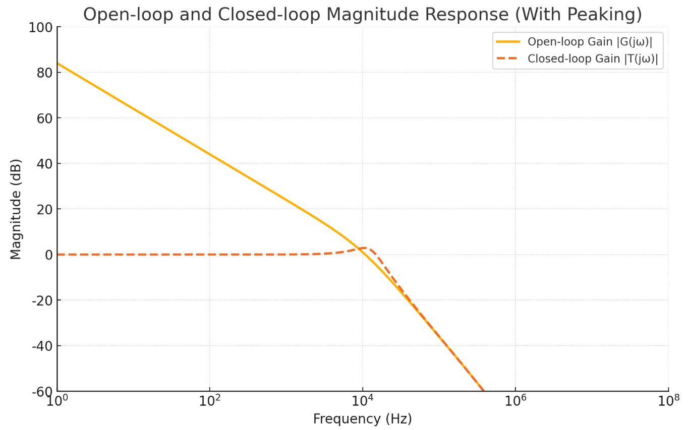
锁相环的传输特性
传输函数
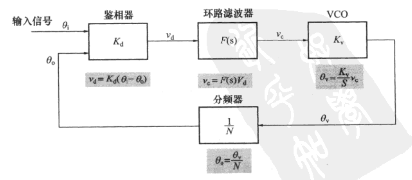
如图为锁相环的基本框图。
锁相环的前向增益： \[ G(s)=\frac{K_{d}F(s)K_\mathrm{v}}{s} \]
反馈增益： \[ H(s)=\frac{1}{N} \]
锁相环的开环传递函数（环路增益/开环增益）为： \[ L(s)=G(s)H(s)=\frac{K_{d}F(s)K_\mathrm{v}}{sN} \] 闭环传递函数（闭环增益）： \[ T(s)=\frac{G(s)}{1+G(s)H(s)} \]
式中：
\(K_d\)：鉴相器增益，单位：v/rad。在数据手册中，为输出误差电压与相位差关系图的斜率，如下图：
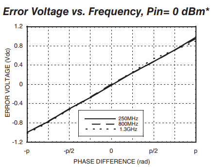
\(F(s)\)：环路滤波器的传输函数。
\(K_\mathrm{v}\)：VCO增益，单位：\(\mathrm{rad}/\mathrm{s}\cdot\mathrm{v}\)。在数据手册中，为输出频率与控制电压关系图的斜率乘以2π。
\(N\)：反馈分频比。
环路带宽和相位裕度
环路带宽：环路增益\(L(s)\)降为0dB时对应的频率。（环路增益一般随频率增大而降低）（不是环路滤波器的带宽）
相位裕度：在环路带宽频率（也就是开环增益\(L(s)\)降到 0 dB 时的频率）下，开环传递函数\(L(s)\)相位距离 -180° 还有多少的余量。
举例1
如图所示的锁相环结构：
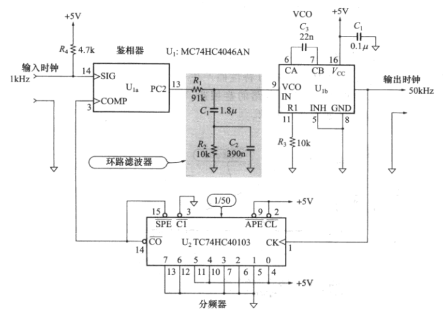
鉴相器
鉴相器的输入输出特性如下：
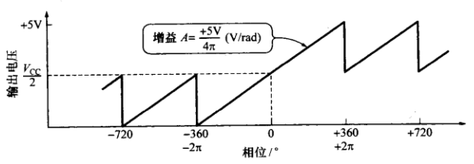
所以鉴相器增益：\(K_d=\frac{5}{4\pi}\approx0.398(\mathrm{V/rad})\)
VCO
VCO的输入输出特性如下：
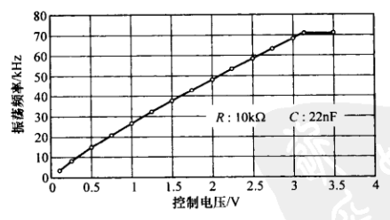
输出频率为50KHz，在图中找到50KHz处的斜率，所以VCO的增益：\(K_\mathrm{v}=\frac{(58.25-37.53)\times10^3\times2\pi}{2.5-1.5}\approx130.2(\mathrm{rad/s}\cdot\mathrm{V})\)
环路滤波器
环路滤波器结构如下：
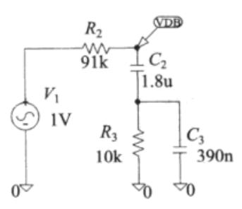
所以环路滤波器的传输函数：\(F(s)=\frac{Z_2+Z_3}{R_2+Z_2+Z_3}\)，其中，\(Z_2=\frac{1}{sC_2}\)，\(Z_3=R_3//(\frac{1}{sC_3})=\frac{R_3}{1+sR_3C_3}\)
分频器
反馈分频比为50，所以反馈增益：\(H(s)=\frac{1}{50}\)
所以总的环路增益：\(L(s)=G(s)H(s)=\frac{K_{d}F(s)K_\mathrm{v}}{sN}\)，将以上的值带入，使用MATLAB绘制伯德图如下：
MATLAB代码
1 | s = tf('s'); |
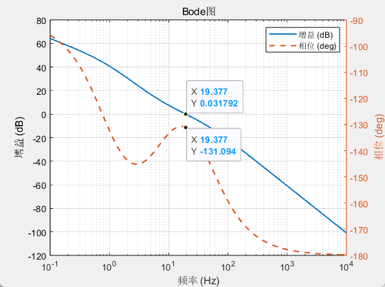
从图中可以看到，开环增益为0dB时，对应的频率约为19.4Hz，相位为-131°。所以该PLL的环路带宽为19.4Hz，相位裕度为（180°-131°）=49°，略小于60°
闭环传递函数为：\(T(s)=\frac{G(s)}{1+G(s)H(s)}\)，使用MATLAB绘制伯德图如下：
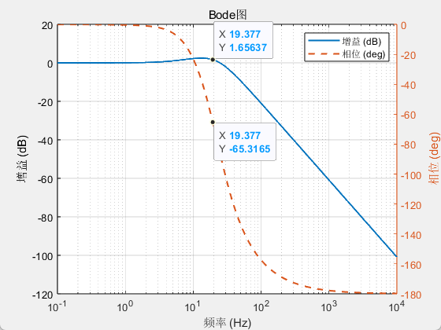
因为相位裕度小于60°，所以在环路带宽处，闭环增益会有一个抬升，形成一个鼓包。
举例2
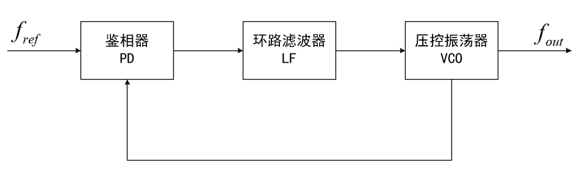
鉴相器
鉴相器增益为：\(K_d=\frac{3.3}{2\pi}(\mathrm{V/rad})\)
VCO
VCO增益：\(K_{VCO}=\frac{(2\pi\times3\times10^9)}{11}(\mathrm{rad/s}\cdot\mathrm{V})\)
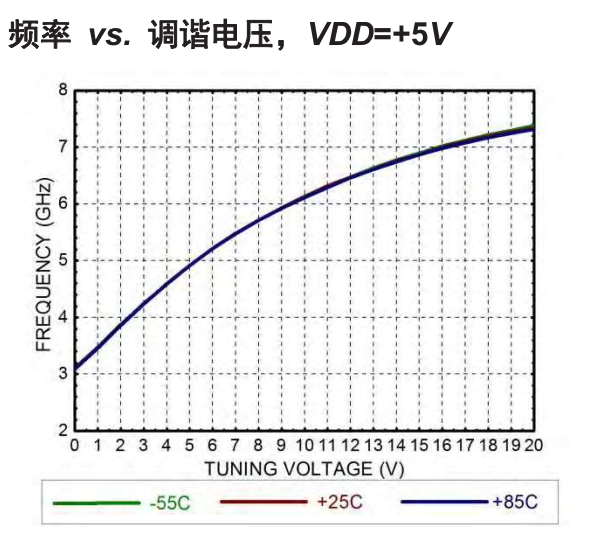
环路滤波器
环路滤波器结构如下，为有源环路滤波器：
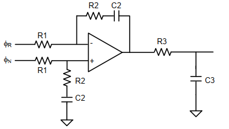
传输函数： \[ F(s)=\frac{1+s\cdot T2}{s\cdot T\cdot(1+s\cdot T1)} \] 其中：\(T2 = R2 \cdot C2\)， \(T1 = R3 \cdot C3\)， \(T = R1 \cdot C2\)
根据需要的环路带宽和相位裕度，该结构可以由以下表格计算电容电阻值：
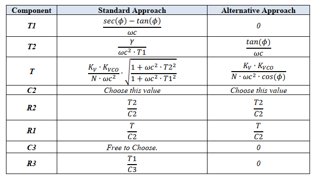
其中：\(\phi\) 为相位裕度，\(\omega c\) 为环路带宽（角频率），\(\gamma\) 一般为1，\(K_V\) 和 \(K_{VCO}\) 为鉴相器增益和VCO增益，N 为分频比。
选择C2和C3的值都为2.2nF。计算得到：R1=154.69K，R2=539.98，R3=38.769。
使用MATLAB计算开环传递函数和闭环传递函数：
开环传递函数的伯德图如下：
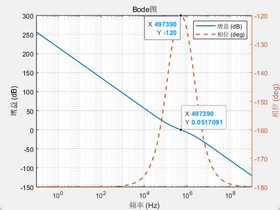
闭环传递函数的博得图如下：
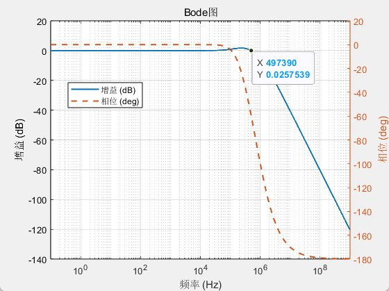